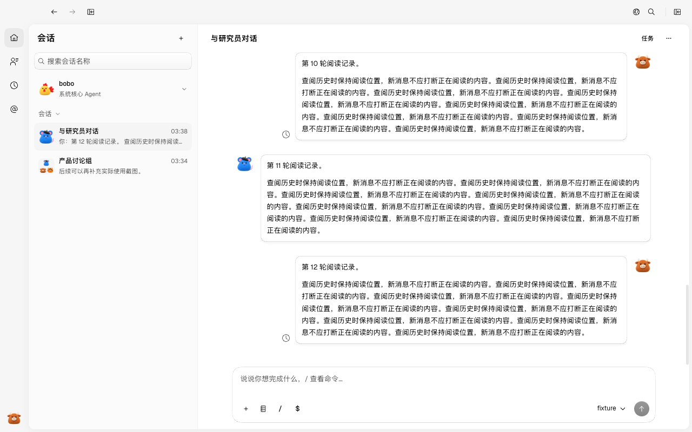
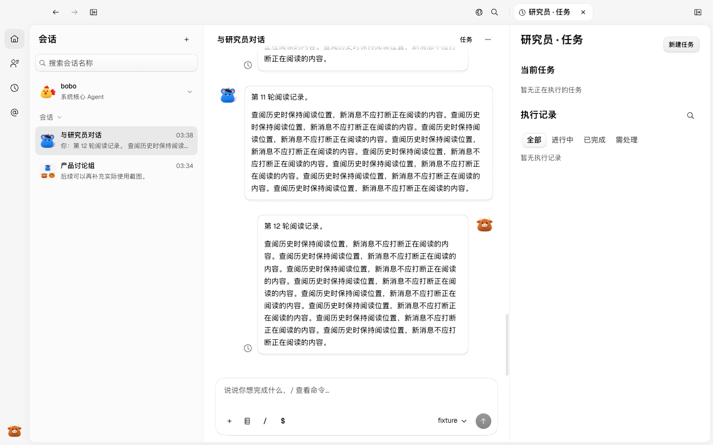
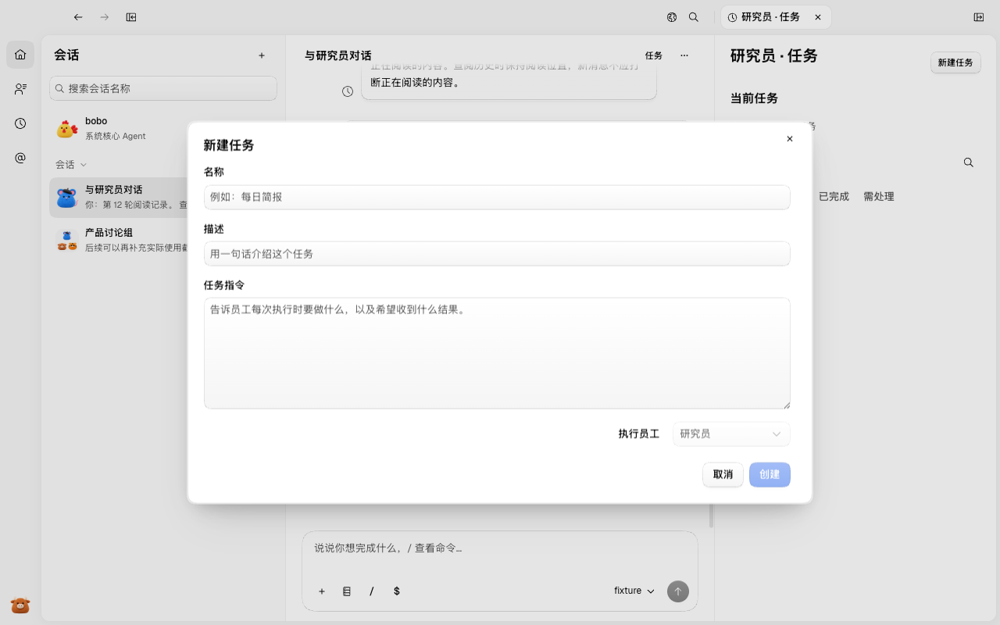
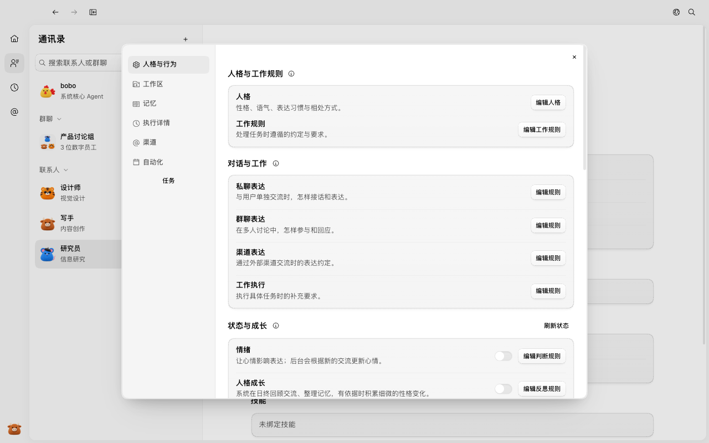
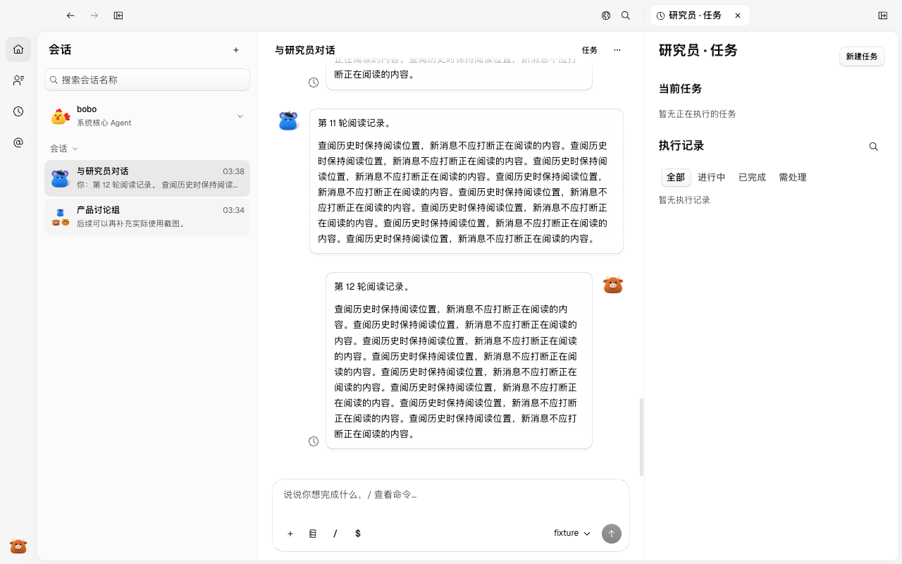
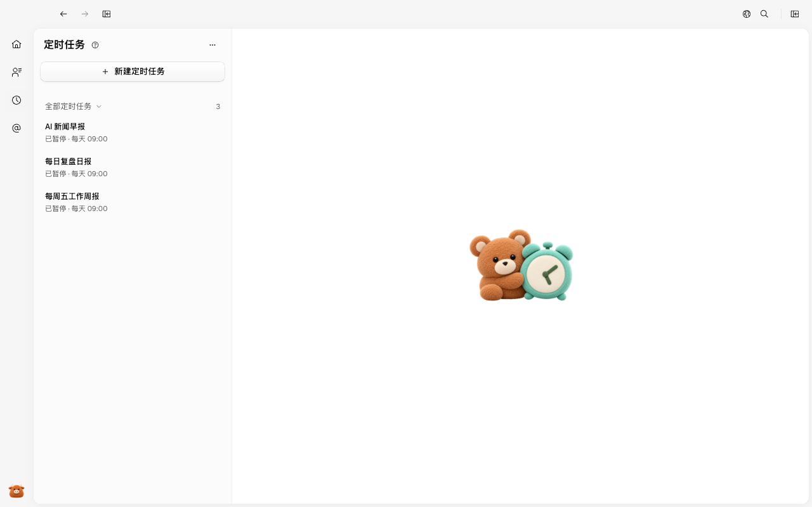

#80 界面预览
commit 9765208 · 回到 PR · 该 PR 在数字员工的直接会话标题栏新增「任务」入口，点击后先定位到该员工的主会话，再在会话右侧打开该员工的任务面板（当前任务、排队中、普通任务与历史，可新建普通任务）；通讯录里的员工详情也新增「任务」入口，统一走同一导航。定时任务页保持原名称、列表与「新建定时任务」入口，并新增「排队中」状态文案。
红线是鼠标走过的轨迹，红色圆环是一次点击；底部文字是这一步在做什么。空格暂停，← → 逐段查看。

员工会话右侧任务面板 · 直接会话标题栏右侧的「任务」入口

员工会话右侧任务面板 · 员工会话右侧打开的任务面板：当前任务、普通任务与历史

员工会话右侧任务面板 · 「新建任务」弹窗的表单
 通讯录员工详情进入任务 · 通讯录里的研究员详情与左侧分类标签
通讯录员工详情进入任务 · 通讯录里的研究员详情与左侧分类标签

通讯录员工详情进入任务 · 员工详情左侧分类标签与「任务」入口

通讯录员工详情进入任务 · 从员工详情点击「任务」后的页面：员工会话与其右侧任务面板

定时任务页保持原样 · 定时任务页面：原列表、暂停状态与「新建定时任务」入口